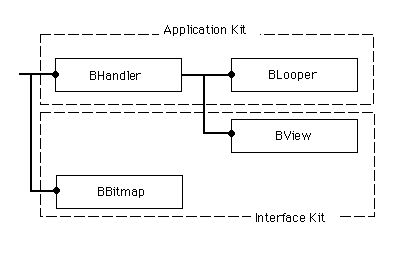
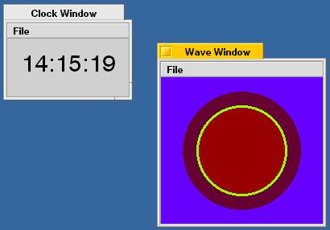
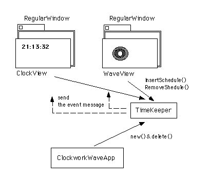
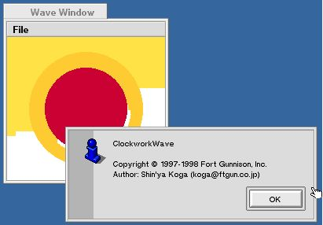
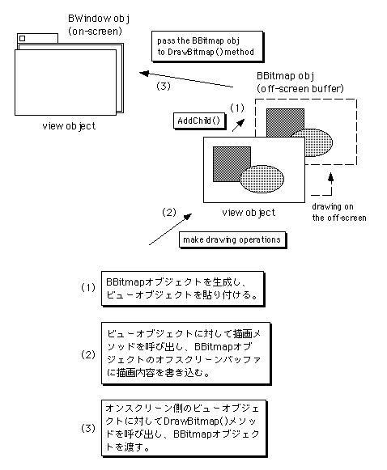
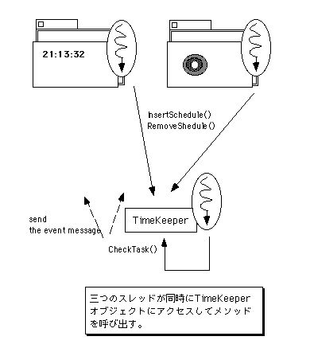

第7章 もっと動きを
この章では、アニメーション表示を行って動きのある画面を作ります。つまり、題材として以下のものをとりあげます。
◇動きのある画面表示、つまりアニメーションの描画
◇画面更新時のちらつきを抑えるための、オフスクリーン描画
◇二つのウィンドウで行われる処理のタイミングを合わせるのに必要な、イベント
スケジューリング
これらの題材をプログラミングするために、BeOSのAPIが提供しているクラスのうち、主に以下のものを利用します。
●BView(Interface Kit)
●BBitmap(Interface Kit)
●BLooper(Application Kit)
これらのクラスの間の階層関係を、図7.1に示します。

図[7.1] 第7章で主に扱うクラス間の階層図
プログラミングの説明に使うサンプルアプリケーションは、全部で二つ用意しています。7.1節では、画面の更新や再描画のことを深く考えないバージョンのアプリケーションを作り、次に7.2節でそれを改良します。サンプルで扱うアニメーションはとても簡単なものですが、この章の説明を読んでBeOSのAPIをどう利用すればよいのかを理解すれば、高度な処理にも応用できるでしょう。
7.1 時計じかけのアニメーション
7.1.1 サンプルの機能と構造
アニメーション表示を行うためのプログラミングを解説する前に、まずはサンプルアプリケーションについて見ておきましょう。図7.2が、この章で使う“ClockworkWave”という名前のサンプルを動かした様子です。

図[7.2] ClockworkWaveのスクリーンショット
次に、このアプリケーションの機能、つまりClockworkWaveの外部仕様を述べます。
・起動すると二つのウィンドウを開く。どちらのウィンドウにもメニューバーがあり、"File"メニューから"Quit"項目を選んでアプリケーションを終了できる。また、アバウト項目を選ぶとアバウトダイアログを表示する。
・二つのウィンドウのうち、一方には現在時刻を秒単位で表示する。なお、表示はデジタル形式で行い、一秒ごとに表示内容を更新する。
・もう一方のウィンドウには、中心から外側に向けて拡がっていく波紋のアニメーションを表示する。また、波紋の色を4秒ごとに変化させる。
・ウィンドウを二つとも閉じると、アプリケーションが自動的に終了する。また、一方のウィンドウを閉じるか、または最小化して隠しても、もう一方のウィンドウのメニュー項目を選ぶと開き直すことができる。
上に書いた外部仕様と、図7.2のスクリーンショットからでは実際の動きが分からないかも知れませんね。その場合は、付録に付けたサンプルコード集からClockworkWaveのソースファイルやプロジェクトファイルをコピーし、アプリケーションを作成して動かしてみて下さい。サンプルコード集の中の“7.1_ClockworkWave”というのが、ClockworkWaveの最初のバージョンのフォルダです。また、“7.2_ClockworkWaveR”というのは、この次の7.2節で説明する改良バージョンのフォルダです。できれば両方一度にコピーし、動きの違いを観察してみて下さい。
なお、本章のサンプルからは、それぞれのサンプル間で共通に利用するソースをライブラリとしてフォルダにまとめています。“MyLib”というのが、そのライブラリを収録したフォルダです。ClockworkWaveアプリケーションを作成する場合は、このフォルダを一緒にコピーしないと作成できませんので注意して下さい。つまり“7.1_ClockworkWave”フォルダや“7.2_ClockworkWaveR”フォルダをコピーする時は、必ず“MyLib”フォルダも一緒にコピーする必要があります。
ClockworkWaveアプリケーションの動きが分かったら、次はその内部を見てみましょう。図7.3に、ClockworkWaveのモジュール構成を示します。

図[7.3] ClockworkWaveのモジュール構成図
図7.3に示したモジュールのうち、中心的な役割を果たすのはClockViewクラスとWaveViewクラス、そしてTimeKeeperクラスです。ClockViewクラスは時刻表示を行うビュークラスで、WaveViewクラスは波紋のアニメーション表示を行うビュークラスです。また、TimeKeeperクラスはイベントスケジューリングを行うクラスで、BLooperのサブクラスとして実装しています。図7.3に示したそれぞれのクラスの概要を、以下に述べます。
■ClockworkWaveAppクラス
ClockworkWaveのアプリケーションクラス。BApplicationクラスのメソッドのうち、フック関数として提供されているReadyToRun()とMessageReceived()、それにAboutRequested()を実装し、またQuit()メソッドを再定義しています。自分以外のモジュールを生成し、それらを管理するのが主な役割です。ウィンドウが二つとも閉じられたとき、自動的にアプリケーションを終了するのは、ClockworkWaveAppクラスとRegularWindowクラスの連携によるものです。
■RegularWindowクラス
ウィンドウクラスです。BWindowクラスのメソッドのうち、Quit()メソッドを再定義しています。前の第6章の説明で使ったSingleWindowクラスやSmartWindowクラスを発展させたもので、ウィンドウが閉じる時にアプリケーションへ送るメッセージコードを、コンストラクタに渡す引数で設定できるのが特徴です。なお、これ以降に登場するサンプルアプリケーションは全てRegularWindowクラスを利用しています。このため、サンプルコード集では、RegularWindowクラスのソースをライブラリ用のフォルダ(“MyLib”)に収録しています。
■ClockViewクラス
時刻表示を行うビュークラスです。TimeKeeperオブジェクトを利用して、1秒ごとに表示内容を更新します。BViewクラスが提供しているフック関数のうち、AttachedToWindow()とDeatchedFromWinodw()、およびDraw()とMessageReceived()を実装しています。
■WaveViewクラス
波紋のアニメーション表示を行うクラスです。TimeKeeperオブジェクトを利用して、4秒ごとに波紋の色を変更します。アニメーション表示は、BWindowクラスとBViewクラスの連携機構を利用し、十分短い間隔でPulse()メソッドを呼び出させて行います。BViewクラスが提供しているフック関数のうち、AttachedToWindow()とDeatchedFromWindow()、およびPulse()を実装しています。なお、Pulse()メソッドについては7.1.3で詳しく説明します。
■TimeKeeperクラス
イベントスケジューリング機能を提供するクラスです。監視用のスレッドを使って、イベントを発生させる時刻に達しているかどうかを定期的に調べ、その時刻に達したらイベントを起こします。TimeKeeperクラスでは、イベントを起こすというのは前もって指定されたターゲットにメッセージを送ることです。前述したClockViewクラスとWaveViewクラスは、それぞれTimeKeeperオブジェクトにイベントを登録し、自分が望む周期でメッセージを送ってもらいます。そして、送られたメッセージに従って時刻の表示を更新したり、また波紋と水面の色を変更するのです。
7.1.2 サンプルのソースコード
前述した、ClockworkWaveアプリケーションを構成するクラスのうち、TimeKeeper以外のもののソースをリスト7.1～7.8に示します。TimeKeeperクラスの説明は7.3節で行うため、ここではソースを示しません。ビュークラスやアプリケーションクラスなど、まずは目に見える部分の動きを司っているものの働きを見ておきましょう。
[リスト7.1] ClockworkWaveApp.h
#ifndef _CLOCKWORK_WAVE_APP_H_
#define _CLOCKWORK_WAVE_APP_H_
#include <app/Application.h>
/* 関連クラス・構造体 */
class RegularWindow;
class TimeKeeper;
class BMenuBar;
/*
* ClockworkWaveAppクラスの定義
*/
class ClockworkWaveApp : public BApplication {
// メソッド
public:
// 初期化と解放
ClockworkWaveApp(void);
~ClockworkWaveApp(void);
private:
// 起動と終了
void ReadyToRun(void);
void Quit(void);
// ビュー部品の生成
void MakeClockWin(void);
void MakeWaveWin(void);
BMenuBar* MakeMenuBar(bool forClock);
// メニューの応答
void MessageReceived(BMessage* message);
void AboutRequested(void);
void CheckWindow(BMessage* message);
void ShowClock(void);
void ShowWave(void);
// ウィンドウ操作
void ShowWindow(BWindow* inWindow);
// データメンバ
private:
RegularWindow* fClockWin; /* 時計表示のウィンドウ */
RegularWindow* fWaveWin; /* 水面表示のウィンドウ */
TimeKeeper* fTimeKeeper; /* タイミング動作用 */
};
#endif /* _CLOCKWORK_WAVE_APP_H_ */
[リスト7.2] ClockworkWaveApp.cp
#include "ClockworkWaveApp.h"
#include "ClockView.h"
#include "WaveView.h"
#include "TimeKeeper.h"
#include "GUI/RegularWindow.h"
#include "KGUtility/kgDebug.h"
#include <interface/Alert.h>
#include <interface/MenuBar.h>
#include <interface/MenuItem.h>
#include <support/Autolock.h>
/* メッセージのコード */
enum {
WINDOW_CLOSED = 'wcld',
SHOW_CLOCK = 'sclk',
SHOW_WAVE = 'swav'
};
/* アバウトダイアログのメッセージ */
const char kAboutMsg[] = "ClockworkWave\n\n"
"Copyright " B_UTF8_COPYRIGHT " 1997-1998 Fort Gunnison, Inc.\n"
"Author: Shin'ya Koga (koga@ftgun.co.jp)";
/* ClockworkWaveAppクラスの非公開メソッド */
/*
* 起動と終了; ClockworkWaveApp
*/
void
ClockworkWaveApp::ReadyToRun (void)
{
/* TimeKeeperオブジェクトを生成して起動 */
fTimeKeeper = new TimeKeeper();
fTimeKeeper->Run();
/* 二つのウィンドウを生成して表示 */
this->MakeClockWin();
this->MakeWaveWin();
return;
}
void
ClockworkWaveApp::Quit (void)
{
/* TimeKeeperオブジェクトを停止して解放 */
(void)fTimeKeeper->Lock();
fTimeKeeper->Quit();
/* 親クラスのメソッドを実行 */
BApplication::Quit();
return;
}
/*
* ビュー部品の生成; ClockworkWaveApp
*/
void
ClockworkWaveApp::MakeClockWin (void)
{
BMenuBar* aMenuBar;
BView* aView;
/* 時計を表示するウィンドウを生成して表示 */
fClockWin = new RegularWindow(
BRect(50, 50, 200, 140),
"Clock Window",
B_TITLED_WINDOW,
0,
WINDOW_CLOSED
);
aMenuBar = this->MakeMenuBar(true);
aView = new ClockView(
BRect(0, 0, 0, 0), B_FOLLOW_ALL_SIDES, fTimeKeeper
);
aView->SetViewColor(0xD0, 0xD0, 0xD0);
fClockWin->InitContent(aMenuBar, aView);
return;
}
void
ClockworkWaveApp::MakeWaveWin (void)
{
BMenuBar* aMenuBar;
BView* aView;
/* 水面を表示するウィンドウを生成して表示 */
fWaveWin = new RegularWindow(
BRect(250, 200, 450, 400),
"Wave Window",
B_TITLED_WINDOW,
B_NOT_RESIZABLE|B_NOT_ZOOMABLE,
WINDOW_CLOSED
);
aMenuBar = this->MakeMenuBar(false);
aView = new WaveView(
BRect(0, 0, 0, 0), B_FOLLOW_ALL_SIDES, fTimeKeeper
);
fWaveWin->InitContent(aMenuBar, aView);
return;
}
BMenuBar*
ClockworkWaveApp::MakeMenuBar (bool forClock)
{
BMenuBar* theMenuBar;
BMenu* theFileMenu;
/* メニューバーと「File」メニューを生成 */
theMenuBar = new BMenuBar(BRect(0, 0, 0, 0), B_EMPTY_STRING);
theFileMenu = new BMenu("File");
theMenuBar->AddItem(theFileMenu);
/* about項目 */
(void)theFileMenu->AddItem(
new BMenuItem(
"About ClockworkWave" B_UTF8_ELLIPSIS,
new BMessage(B_ABOUT_REQUESTED)
)
);
/* -- */
(void)theFileMenu->AddSeparatorItem();
/* ウィンドウ表示項目 */
if (forClock) {
(void)theFileMenu->AddItem(
new BMenuItem(
"Show Wave",
new BMessage(SHOW_WAVE)
)
);
} else {
(void)theFileMenu->AddItem(
new BMenuItem(
"Show Clock",
new BMessage(SHOW_CLOCK)
)
);
}
/* -- */
(void)theFileMenu->AddSeparatorItem();
/* Quit項目 */
(void)theFileMenu->AddItem(
new BMenuItem(
"Quit",
new BMessage(B_QUIT_REQUESTED),
'Q'
)
);
/* メニューのターゲットを設定 */
theFileMenu->SetTargetForItems(this);
return theMenuBar;
}
/*
* メニュー応答; ClockworkWaveApp
*/
void
ClockworkWaveApp::MessageReceived (BMessage* message)
{
switch (message->what) {
case WINDOW_CLOSED:
this->CheckWindow(message); break;
case SHOW_CLOCK:
this->ShowClock(); break;
case SHOW_WAVE:
this->ShowWave(); break;
default:
BApplication::MessageReceived(message);
}
return;
}
void
ClockworkWaveApp::AboutRequested (void)
{
BAlert* alertPanel;
alertPanel = new BAlert("about box", kAboutMsg, "OK");
(void)alertPanel->Go(NULL);
return;
}
void
ClockworkWaveApp::CheckWindow (BMessage* message)
{
status_t sts;
BWindow* sender;
/* 終了したウィンドウを記録 */
sts = message->FindPointer(kSender, &sender);
if (sts != B_OK)
goto err;
if (sender == fClockWin)
fClockWin = NULL;
else if (sender == fWaveWin)
fWaveWin = NULL;
else {
sts = B_ERROR;
goto err;
}
/* 全てのウィンドウが閉じられた場合は終了 */
if (fClockWin == NULL && fWaveWin == NULL)
(void)this->PostMessage(B_QUIT_REQUESTED);
return;
err:
::Error("ClockworkWaveApp::CheckWindow", sts);
return;
}
void
ClockworkWaveApp::ShowClock (void)
{
if (fClockWin == NULL)
this->MakeClockWin();
else
this->ShowWindow(fClockWin);
return;
}
void
ClockworkWaveApp::ShowWave (void)
{
if (fWaveWin == NULL)
this->MakeWaveWin();
else
this->ShowWindow(fWaveWin);
return;
}
/*
* ウィンドウ操作; ClockworkWaveApp
*/
void
ClockworkWaveApp::ShowWindow (BWindow* inWindow)
{
BAutolock lock(inWindow);
if (inWindow->IsHidden())
inWindow->Show();
else if (! inWindow->IsActive())
inWindow->Activate();
return;
}
/*
* ClockworkWaveAppクラスの公開メソッド
*/
ClockworkWaveApp::ClockworkWaveApp (void)
: BApplication("application/x-vnd.FtGUN-ClockworkWave")
{
fClockWin = fWaveWin = NULL;
fTimeKeeper = NULL;
}
ClockworkWaveApp::~ClockworkWaveApp (void)
{ /* do nothing */ }
[リスト7.3] RegularWindow.h
#ifndef _REGULAR_WINDOW_H_
#define _REGULAR_WINDOW_H_
#include <interface/Window.h>
/* 文字列定数 */
extern const char kSender[];
/*
* RegularWindowのクラス定義
*/
class RegularWindow : public BWindow {
// メソッド
public:
// 初期化と解放
RegularWindow(BRect frame, const char* title,
window_type type, uint32 flags, uint32 quitMsg);
virtual ~RegularWindow(void);
virtual void InitContent(BView* inContent);
virtual void InitContent(BMenuBar* inMenuBar, BView* inContent);
// 終了時処理
void Quit(void);
// データメンバ
private:
uint32 fQuitMsg; /* 終了通知メッセージのコード */
};
#endif /* _REGULAR_WINDOW_H_ */
[リスト7.4] RegularWindow.cp
#include "RegularWindow.h"
#include <app/Application.h>
#include <interface/MenuBar.h>
#include <support/Debug.h>
/* 文字列定数 */
const char kSender[] = "sender";
/*
* RegularWindowクラスの公開メソッド
*/
RegularWindow::RegularWindow (BRect frame, const char* title,
window_type type, uint32 flags, uint32 quitMsg)
: BWindow(frame, title, type, flags, B_CURRENT_WORKSPACE)
{
fQuitMsg = quitMsg;
}
RegularWindow::~RegularWindow (void)
{ /* do nothing */ }
void
RegularWindow::InitContent (BView* inContent)
{
#if DEBUG
this->Lock();
ASSERT(this->IsHidden());
ASSERT(this->CountChildren() == 0);
this->Unlock();
#endif
BRect myBounds = this->Bounds();
inContent->ResizeTo(myBounds.Width(), myBounds.Height());
this->AddChild(inContent);
this->Show();
return;
}
void
RegularWindow::InitContent (BMenuBar* inMenuBar, BView* inContent)
{
#if DEBUG
this->Lock();
ASSERT(this->IsHidden());
ASSERT(this->CountChildren() == 0);
this->Unlock();
#endif
BRect myBounds = this->Bounds();
BRect mbarFrame;
this->AddChild(inMenuBar);
mbarFrame = inMenuBar->Frame();
inContent->ResizeTo(
myBounds.Width(), myBounds.Height() - mbarFrame.Height() - 1);
inContent->MoveBy(0, mbarFrame.Height() + 1);
this->AddChild(inContent);
this->Show();
return;
}
/*
* 終了時処理; RegularWindow
*/
void
RegularWindow::Quit (void)
{
BMessage quitMessage(fQuitMsg);
/* アプリケーションに終了を通知 */
quitMessage.AddPointer(kSender, this);
(void)be_app->PostMessage(&quitMessage);
/* 親クラスのメソッドを実行 */
BWindow::Quit();
return;
}
[リスト7.5] ClockView.h
#ifndef _CLOCK_VIEW_H_
#define _CLOCK_VIEW_H_
#include <interface/View.h>
#include <time.h>
/* 関連クラス・構造体 */
class TimeKeeper;
/*
* ClockViewクラスの定義
*/
class ClockView : public BView {
// メソッド
public:
// 初期化と解放
ClockView(BRect frame, uint32 resizeMask, TimeKeeper* inTimeKeeper);
~ClockView(void);
private:
// 描画処理
void AttachedToWindow(void);
void DetachedFromWindow(void);
void Draw(BRect updateRect);
// メッセージ処理
void MessageReceived(BMessage* message);
void UpdateTime(void);
// データメンバ
private:
TimeKeeper* fTimeKeeper; /* スケジューラ */
tm fTime; /* 現在時刻 */
};
#endif /* _CLOCK_VIEW_H_ */
[リスト7.6] ClockView.cp
#include "ClockView.h"
#include "TimeKeeper.h"
#include "KGUtility/kgDebug.h"
#include <support/Debug.h>
#include <stdio.h>
/* メッセージのコード */
enum {
UPDATE_TIME = 'uptm'
};
/* ClockViewクラスの非公開メソッド */
/*
* 描画処理; ClockView
*/
void
ClockView::AttachedToWindow (void)
{
status_t sts;
ScheduleInfo theSchedule;
/* スケジュールを登録 */
theSchedule.client = this;
theSchedule.message = new BMessage(UPDATE_TIME);
theSchedule.period = 1;
theSchedule.first_time = ::real_time_clock();
sts = fTimeKeeper->InsertSchedule(theSchedule);
if (sts != B_OK)
goto err;
/* 現在の時刻を取得 */
this->UpdateTime();
return;
err:
::Error("ClockView::AttachedToWindow", sts);
return;
}
void
ClockView::DetachedFromWindow (void)
{
status_t sts;
sts = fTimeKeeper->RemoveSchedule(this, UPDATE_TIME);
if (sts != B_OK)
goto err;
return;
err:
::Error("ClockView::DetachedFromWindow", sts);
return;
}
void
ClockView::Draw (BRect /* updateRect */)
{
char timeStr[64];
rgb_color orgColor;
/* 全体をビューの色で塗りつぶしてクリア */
orgColor = this->HighColor();
this->SetHighColor(this->ViewColor());
this->FillRect(this->Bounds());
this->SetHighColor(orgColor());
/* 時刻表示文字列を描画 */
this->SetFontSize(30);
sprintf(timeStr, "%02d:%02d:%02d",
fTime.tm_hour, fTime.tm_min, fTime.tm_sec);
this->DrawString(timeStr, BPoint(18, 40));
return;
}
/*
* メッセージ処理; ClockView
*/
void
ClockView::MessageReceived (BMessage* message)
{
switch (message->what) {
case UPDATE_TIME:
this->UpdateTime(); break;
default:
BView::MessageReceived(message);
}
return;
}
void
ClockView::UpdateTime (void)
{
time_t curTime = time(0);
/* 時刻情報を更新 */
fTime = *(localtime(&curTime));
/* 新しい時刻を描画 */
this->Draw(this->Bounds());
return;
}
/*
* ClockViewクラスの公開メソッド
*/
ClockView::ClockView (
BRect frame, uint32 resizeMask, TimeKeeper* inTimeKeeper)
: BView(frame, "ClockView", resizeMask, B_WILL_DRAW)
{
ASSERT(inTimeKeeper != NULL);
fTimeKeeper = inTimeKeeper;
fTime.tm_hour = fTime.tm_min = fTime.tm_sec = 0;
}
ClockView::~ClockView (void)
{ /* do nothing */ }
[リスト7.7] WaveView.h
#ifndef _WAVE_VIEW_H_
#define _WAVE_VIEW_H_
#include <interface/View.h>
/* 関連クラス・構造体 */
class TimeKeeper;
/*
* WaveViewクラスの定義
*/
class WaveView : public BView {
// メソッド
public:
// 初期化と解放
WaveView(BRect frame, uint32 resizeMask, TimeKeeper* inTimeKeeper);
~WaveView(void);
private:
// 描画処理
void AttachedToWindow(void);
void DetachedFromWindow(void);
// メッセージ処理
void MessageReceived(BMessage* message);
void Pulse(void);
void UpdateColor(void);
// データメンバ
private:
TimeKeeper* fTimeKeeper; /* スケジューラ */
uint8 fCurrColor; /* 水面の色 */
float fWaveRadius; /* 波紋の半径 */
BPoint fWaveOrigin; /* 波紋の中心 */
};
#endif /* _WAVE_VIEW_H_ */
[リスト7.8] WaveView.cp
#include "WaveView.h"
#include "TimeKeeper.h"
#include "KGUtility/kgDebug.h"
#include <interface/Screen.h>
#include <interface/Window.h>
#include <support/Debug.h>
/* メッセージのコード */
enum {
UPDATE_COLOR = 'upcl'
};
/* その他の定数 */
const float kInitialRadius = 10; /* 波紋半径の初期値 */
/* WaveViewクラスの非公開メソッド */
/*
* 描画処理; WaveView
*/
void
WaveView::AttachedToWindow (void)
{
status_t sts;
ScheduleInfo theSchedule;
BRect myBounds = this->Bounds();
/* スケジュールを登録 */
theSchedule.client = this;
theSchedule.message = new BMessage(UPDATE_COLOR);
theSchedule.period = 4;
theSchedule.first_time = ::real_time_clock() + 4;
sts = fTimeKeeper->InsertSchedule(theSchedule);
if (sts != B_OK)
goto err;
/* 水面の色の初期値を設定 */
this->UpdateColor();
this->Window()->SetPulseRate(100 * 1000);
/* 波紋の原点座標を決定 */
fWaveOrigin.x = myBounds.Width() / 2;
fWaveOrigin.y = myBounds.Height() / 2;
return;
err:
::Error("WaveView::AttachedToWindow", sts);
return;
}
void
WaveView::DetachedFromWindow (void)
{
status_t sts;
sts = fTimeKeeper->RemoveSchedule(this, UPDATE_COLOR);
if (sts != B_OK)
goto err;
return;
err:
::Error("WaveView::DetachedFromWindow", sts);
return;
}
/*
* メッセージ処理; WaveView
*/
void
WaveView::MessageReceived (BMessage* message)
{
switch (message->what) {
case UPDATE_COLOR:
this->UpdateColor(); break;
default:
BView::MessageReceived(message);
}
return;
}
void
WaveView::Pulse (void)
{
BScreen myScreen(this->Window());
rgb_color orgRGBColor = this->HighColor();
uint8 waveColor;
/* 波紋の色を決定 */
waveColor = myScreen.InvertIndex(fCurrColor);
if (fCurrColor == 247)
waveColor += 1;
else if (fCurrColor == 16)
waveColor -= 2;
/* 波紋を現在位置に描画 */
this->SetHighColor(myScreen.ColorForIndex(waveColor)); /* 波紋の色 */
if (fWaveRadius == kInitialRadius) { /* 初期状態 */
this->FillEllipse(fWaveOrigin, fWaveRadius * 2, fWaveRadius * 2);
} else { /* 拡がった状態 */
this->StrokeEllipse(fWaveOrigin,
kInitialRadius + fWaveRadius, kInitialRadius + fWaveRadius);
this->SetHighColor(myScreen.ColorForIndex(fCurrColor));
this->FillEllipse(fWaveOrigin,
fWaveRadius - kInitialRadius, fWaveRadius - kInitialRadius);
}
this->SetHighColor(orgRGBColor); /* 元のペンカラーを復元 */
/* 波紋の半径値を更新 */
if ((fWaveOrigin.x * sqrt(2.0)) <= (fWaveRadius - kInitialRadius))
fWaveRadius = kInitialRadius;
else
fWaveRadius += 1;
return;
}
void
WaveView::UpdateColor (void)
{
ASSERT(this->Window() != NULL);
BScreen myScreen(this->Window());
rgb_color newColor;
/* 波紋の色を算出 */
newColor = myScreen.ColorForIndex(fCurrColor--);
/* 使う色がパレットを一周したら最初に戻す */
if ((int16)fCurrColor < 0)
fCurrColor = 255;
return;
}
/*
* WaveViewクラスの公開メソッド
*/
WaveView::WaveView (
BRect frame, uint32 resizeMask, TimeKeeper* inTimeKeeper)
: BView(frame, "Wave", resizeMask, B_PULSE_NEEDED)
{
ASSERT(inTimeKeeper != NULL);
fTimeKeeper = inTimeKeeper;
fCurrColor = 255;
fWaveRadius = kInitialRadius;
}
WaveView::~WaveView (void)
{ /* do nothing */ }
最初はアプリケーションクラスです。リスト7.2を見て下さい。ClockworkWaveAppクラスでは、ReadyToRun()メソッドでTimeKeeperオブジェクトを生成し、Quit()メソッドでそれを解放しています。
ClockworkWaveAppクラスのメソッドのうち、MakeClockWin()とMakeWaveWin()、それからMakeMenuBar()については特に説明しません。これらはウィンドウやメニューバーを生成するものですが、前の章の説明で使ったサンプル(TinyApp)と大体同じだからです。ただし、ウィンドウオブジェクトとしてRegularWindowクラスのインスタンスを生成する際、コンストラクタの第五引数に“WINDOW_CLOSED”というメッセージコードを渡していることに着目して下さい。RegularWindowクラスの概要説明でも述べたように、このメッセージコードは、ウィンドウが閉じる時にアプリケーションオブジェクトへ送られるメッセージに使われます。
ClockworkWaveAppクラスはのMessageReceived()メソッドでは、システムで定義されている以外のメッセージ、すなわちClockworkWaveアプリケーションで独自に定義した三つのメッセージを処理します。引数に受け取ったメッセージが自分で定義したものではない場合、親クラスであるBApplicationのメソッドを呼び出して処理を引き継ぎます。これを忘れると、システムで定義されたものを処理することができません。BApplicationクラスの場合ですと、第8章で説明するスクリプティング用のメッセージが処理されなくなってしまいます。
ClockworkWaveAppクラスで定義した三つのメッセージについて、その意味や働きを以下に示します。
○WINDOW_CLOSED
ウィンドウが閉じた時に、RegularWindowクラスの働きによって送られます。メッセージには、送り主のウィンドウオブジェクトを指すポインタを記録した"sender"(kSender)という名前のデータ項目が含まれており、これを使って送り主を特定します。
○SHOW_CLOCK
"File"メニューから"Show Clock"項目を選んだ時に送られます。
○SHOW_WAVE
"File"メニューから"Show Wave"項目を選んだ時に送られます。
上に示した各々のメッセージを処理するメソッド、すなわちメッセージハンドラについて、その働きを以下に示します。
○CheckWindow()
WINDOW_CLOSEDメッセージに応答し、どのウィンドウが閉じられたかを記録します。ウィンドウが二つとも閉じられた場合は、自身に対して終了要求メッセージを送ってアプリケーションを終了します。
○ShowClock()
SHOW_CLOCKメッセージに応答し、時刻を表示するウィンドウを開きます。ウィンドウオブジェクトが存在していなければ生成し、そうでない場合はShowWindow()メソッドを呼び出します。
○ShowWave()
SHOW_WAVEメッセージに応答し、波紋のアニメーションを表示するウィンドウを開きます。ShowClock()と同様。
ShowClock()とShowWave()から呼び出されるShowWindow()メソッドは、ClockworkWaveAppクラスで独自に定義したものです。このメソッドでは、Hide()メソッドによってウィンドウが隠されていればウィンドウオブジェクトに対してShow()メソッドを呼び出し、再表示します。また、最小化して隠されていた場合や、現在フロントウィンドウになっていない場合には、Activate()メソッドを呼び出して表示します。以下に、ここで使っているウィンドウ操作用のAPIを示します。なお、これらのAPIの詳細についてはBeOSのAPIリファレンスを参照して下さい。
○IsHidden()
ウィンドウオブジェクトがHide()メソッドによって隠されているか、または生成直後でShow()メソッドが呼び出されていない場合、trueを返します。
○IsActive()
ウィンドウがアクティブであるかどうか、すなわちフロントウィンドウかどうかを返します。
○Show()
Hide()メソッドによって隠されたウィンドウを、再び画面に表示します。ただし、ウィンドウが生成された後で最初に呼び出された場合は特別で、ウィンドウスレッドを生成してメッセージループの開始処理を行います。
○Activate()
ウィンドウをフロントウィンドウにするか、またはフロントウィンドウの状態を解除します。引数にtrueを与えると、ウィンドウをフロントウィンドウにします。このメソッドの引数はオプションであり、何も指定しない場合はtrueが与えられます。なお、IsHidden()の戻り値がtrueである状態では、このメソッドを呼び出してもフロントウィンドウにすることはできません。
IsHidden()やIsActive()メソッドを呼び出す場合、ウィンドウオブジェクトがアプリケーションのメインスレッドとは独立したスレッドによって動作しているため、ウィンドウにロックをかけないと正しい結果が得られない場合があります。リスト7.2では、BAutolockクラスを利用してウィンドウにロックをかけていることに注意して下さい。
アプリケーションクラスの次は、ウィンドウクラスです。リスト7.3と7.4を見て下さい。リストの内容を見ると分かるように、ここで使っているRegularWindowクラスは、前の章の説明で使ったSingleWindowクラス(リスト6.3, 6.4)と大体同じです。違うのは、ウィンドウが閉じた時に送るメッセージのコードを記憶しておく“fQuitMsg”というデータメンバを追加したのと、またメニューバーとビューオブジェクトを受け取るバージョンのInitContent()メソッドを追加したことです。ただし、追加されたバージョンのInitContent()メソッドも、前の章のSmartWindowクラス(リスト6.15,6.16)で説明済みです。したがって、RegularWindowクラスについてはこれ以上説明しません。
アプリケーションクラスとウィンドウクラスの説明が終わったので、次はメインとなるビュークラスを説明します。リスト7.5と7.6に示したClockViewクラスのソース、およびリスト7.7と7.8に示したWaveViewクラスのソースを見て下さい。これらのクラスのメソッドのうち、主なものの働きを以下に示します。
(1)ClockViewクラスの主要メソッド
○AttachedToWindow()
TimeKeeperオブジェクトに対し、1秒おきに時刻更新イベントを起こすように登録します。この結果、以後は1秒に1回“UPDATE_TIME”メッセージが送られてくるようになります。また、UpdateTime()メソッドを呼び出し、画面に表示されたら直ちに現在時刻を表示できるようにします。
○DeatchedFromWindow()
TimeKeeperオブジェクトから、登録したイベントを削除します。
○Draw()
DrawString()メソッドを使って、現在時刻をデジタル表示します。時刻表示に使う文字列のフォントサイズを大きなものにするために、SetFontSize()メソッドでフォントサイズを変更しています。
○MessageReceived()
UPDATE_TIMEメッセージを受け取ったら、UpdateTime()メソッドを呼び出します。それ以外の場合は、BViewクラスのメソッドを呼び出して処理を引き継ぎます。
○UpdateTime()
localtime()を使って現在時刻を取得し、データメンバにセットします。その後、Draw()メソッドを呼び出して再描画を行います。
(2)WaveViewクラスの主要メソッド
○AttachedToWindow()
TimeKeeperオブジェクトに対し、4秒おきに色の更新イベントを起こすように登録します。この結果、以後は4秒に1回“UPDATE_COLOR”メッセージが送られてくるようになります。また、水面の色の初期値を設定するためにUpdateColor()メソッドを呼び出します。その他、円形の波紋を表示する際の原点座標の算出と、Pulse()メソッドの呼び出しレート設定を行っています。
○DeatchedFromWindow()
TimeKeeperオブジェクトから、登録したイベントを削除します。
○MessageReceived()
UPDATE_COLORメッセージを受け取ったら、UpdateColor()メソッドを呼び出します。それ以外の場合は、BViewクラスのメソッドを呼び出して処理を引き継ぎます。
○Pulse()
波紋の表示を更新します。波紋は水面、つまりウィンドウの中心から外側に向けて拡がっていきます。リスト7.8では、前回の呼び出しよりも1ポイント(注7-1)だけ大きい円弧を描いた後、同じく前回よりも1ポイント大きい円を水面の色で塗りつぶしています。この結果、一定の幅を保った波紋が、Pulse()の呼び出しごとに1ポイントずつ半径を拡げながら水面を伝わっていくのです。この波紋描画アルゴリズムは本章の説明の中心ではありませんから、これ以上の説明は省略します。詳細はリスト7.8を参照して下さい。
○UpdateColor()
水面の表示に使う色を変更します。WaveViewでは256色表示を行い、0番目の色から255番目の色まで、UpdateColor()が呼ばれるたびに一つずつ色を変えていきます。また、波紋の色は水面の色を逆転させたものにしているのですが、そのためにBScreenクラスのInvertIndex()メソッドを利用しています。
ここで、WaveViewクラスが利用しているBScreenクラスについて簡単に説明しておきましょう。このクラスは、スクリーンのサイズや色深度など、モニタやビデオカードの特性情報にアクセスするためのもので、Interface Kitで提供されています。リスト7.8では、256色の中からインデックスで指定したものを取得するColorForIndex()、および逆転色のインデックスを取得するInvertIndex()メソッドを使っています。なお、BeOSは1998年2月の時点でマルチスクリーンに対応していませんが、BScreenクラスのインタフェースはマルチスクリーンを意識したものになっています。スクリーンの指定はBScreenのコンストラクタに渡す引数を使って行い、スクリーンのIDかまたはウィンドウによって指定します。何も引数を与えない場合は、メインスクリーンのIDを指定したことになるのですが、リスト7.8では念のためにウィンドウを使ってスクリーンを指定しています。詳細はAPIリファレンスを参照して下さい。
- (注)7-1
- BeOSでは、描画システムの座標単位は1/72インチになっており、他のOSの場合と変わりません。ただし、APIが扱う座標値の型がintではなくfloatなのが特徴的です。
7.1.3 Pulse()のどこがいけないの
ClockworkWaveアプリケーションの改良バージョンに話を進める前に、WaveViewクラスで再定義しているPulse()メソッドの話をしておくことにします。このメソッドは一定の間隔で呼び出されるフック関数で、BViewクラスのコンストラクタに渡す第四引数のフラグを使って呼び出しを制御します。つまり、フラグの値に“B_PULSE_NEEDED”を含めると呼び出しが行われ、含めない場合は呼び出しが行われません。リスト7.8でWaveViewクラスのコンストラクタを見ると、たしかにBViewクラスのコンストラクタの第四引数に“B_PULSE_NEEDED”を渡しています。Pulse()メソッドが呼び出される間隔は、BWindowクラスのSetPulseRate()を使って指定します。このメソッドの引数には、呼び出し間隔をマイクロ秒単位で指定した値を渡します。つまり、引数に1000*1000を渡せば1秒ごとにPulse()メソッドが呼び出されるのです。あれ?ちょっと待って下さい。SetPulseRate()で指定した間隔でPulse()メソッドが繰り返し呼び出されるのなら、わざわざTimeKeeperなんていうクラスを作らずに、全部Pulse()メソッドを利用して済ませれば良かったのではないでしょうか。
そうしなかった理由は、実はWaveViewクラスにあります。WaveViewは波紋のアニメーションを表示しますが、その波紋の色は4秒ごとに変化します。つまり、アニメーション表示のためのタイミング処理の他に、波紋の色を変えるという、別のタイミング処理を行なう必要があるのです。しかし、Pulse()メソッドだけでは、複数のタイミング処理を同時に扱うことはできません。ビュークラスのPulse()メソッドは、そのビューオブジェクトが所属するウィンドウオブジェクトに対しSetPulseRate()メソッドを呼び出して設定した、一定の繰り返し間隔で呼び出されるだけだからです。つまり、タイミング処理の設定はウィンドウごとに一種類しかできないのです。これが、TimeKeeperクラスを導入した最大の理由です。
Pulse()メソッドは、一定間隔で行う繰り返し処理向けであり、指定した時刻に一回だけイベントを起こしたいという場合には利用できません。結局、Pulse()メソッドが適しているのは、WaveViewが行うアニメーション表示のように、比較的簡単な繰り返し処理なのです。繰り返しの間隔に正確さを要求される場合や、また時刻を定めて行う処理には使えません。逆に、単純な繰り返し処理であれば、とても簡単に利用できます。アニメーション表示とは少し違いますが、プログレスバーの表示を行う場合に利用すると、表示の更新処理がとても簡単になるでしょう。
7.3節で見るように、TimeKeeperクラスの方は汎用のイベントスケジューラであり、Pulse()メソッドには適していない処理にも利用することができます。
7.2 ちらつきを無くすには
ClockworkWaveアプリケーションの内部を理解したら、次は改良バージョンに進みましょう。どこを改良したのか分からない人は、7.1.1に戻って実際の動きを確認して下さい。二つのバージョンを動かして比べてみれば、その違いが分かるはずです。7.2.1 改善目標
念のために書いておくと、最初のバージョンには以下の欠陥があります。・時刻表示を行うウィンドウ("Clock Window")で、表示を更新するたびに画面がちらつく。
・波紋のアニメーション表示を行うウィンドウ("Wave Window")は、他のウィンドウを上に置いて隠したあと、再描画させると隠れていた部分が白くなってしまう。
"Clock Window"で画面がちらつくのが分からない場合は、ウィンドウをリサイズして拡げてみて下さい。ちらつきが大きくなるので、分かりやすくなります。また、WaveWindowでの再描画の問題については、その様子を撮ったスクリーンショットを図7.4に示します。

図[7.4] 再描画されずに一部が白くなったWave Windowの画面
これから説明する改良バージョンでは、上に挙げた二つの欠陥を改善します。改良バージョンのソースコードを見る前に、どのようにして改善するのかを説明することにします。その説明を読めば、BeOSのAPIが提供するクラスの一つを利用するだけで、二つの欠陥を克服できることが分かるでしょう。
7.2.2 オフスクリーン描画とBBitmap
まず、"Clock Winodw"で画面がちらつく原因を説明します。ちらつきが起きるのは、現在時刻、つまりウィンドウの表示内容を更新する際に、描画処理の途中経過が見えてしまうからなのです。"Clock Window"ではグレーの背景に黒で現在時刻を表示しますが、この表示を更新する時は、いったん背景色のグレーで塗りつぶし、それから時刻を示す黒い文字列を描き直します(注7-2)。背景色で塗りつぶすのは、単純に文字列を重ね描きしたのでは更新前の文字列が残ってしまうからです。つまり、一度背景色を使って文字列を消し、それから文字列を描き直します。そして、この様子がそのまま見えるために、ちらつきが起きるのです。では、どうすればいいのでしょうか?答えは簡単。途中経過を見せなければよいのです。もしあなたが料理番組のファンなら、ヒントはそこに転がっています。料理番組では、シチューの作り方を説明するのに、テレビカメラの前で5時間煮込んで見せたりはしません。下ごしらえが済んだ材料を鍋に入れて火にかけたら、次は、前もって煮込んでおいた別のシチュー鍋を取り出し、それから説明を続けるでしょう。これと同じことをすればよいのです。
そう、目に見えるスクリーンとは別の場所で描画処理を済ませてしまい、それから結果だけをスクリーンに送れば、途中経過は見えません。これは「オフスクリーン描画」と呼ばれるやり方で、ちらつきを無くすために使われる一般的なものです。BeOSでは専用のAPIが提供されており、これを使えば、オフスクリーン描画を簡単に行うことができます。
BeOSでオフスクリーン描画を行うには、BBitmapクラスとBViewクラスを利用します。BBitmapは、オフスクリーン描画に使うビットマップデータ領域(一般的に、これは「オフスクリーンバッファ」と呼ばれます)を内部に持っており、まずその中に描画内容を書き込んで保存します。次に、BViewクラスのDrawBitmap()メソッドを呼び出してBBitmapオブジェクトを渡せば、それで終わりです。あとは、BViewクラスの働きによってオフスクリーンバッファの内容がスクリーンに転送されます。図7.5に、BBitmapクラスを使ったオフスクリーン描画処理の流れを示します。

図[7.5] BBitmapによるオフスクリーン描画の流れ
さて、BBitmapクラスを利用してオフスクリーン描画を行えば、"Clock Window"で画面がちらつくのを直せることが分かりました。次は、"Wave Window"で表示内容が消えてしまう問題です。"Wave Window"を他のウィンドウで隠した時に表示内容が消えてしまうのは、一回の描画処理では表示内容の一部しか描画していないせいです。
リスト7.8で見たように、WaveViewクラスでは画面全体を描き直すのではなく、一部のみを描き直し、それを繰り返すことで滑らかなアニメーション表示を行っています。しかし、それだけでは再描画の時に問題が起きてしまうというわけです。どうすれば良いのでしょうか?「"Clock View"と同じように、一度オフスクリーンに描画してからスクリーンに転送するよう変更する。」惜しい、もう一工夫です。せっかくオフスクリーン描画を使わずに滑らかなアニメーション表示ができていたのですから、それを活かしたいと思います。
ここでは、表示内容のバックアップとしてオフスクリーンバッファを利用します。つまり、スクリーンに描画するのと同時に、同じ内容をオフスクリーンにも描画しておき、再描画の時にそれを利用するのです。実際の処理手順については、サンプルを使って説明します。
- (注)7-2
- 再描画を行う際、直接Draw()メソッドを呼び出すのではなく、Invalidate()メソッドを使って間接的にDraw()メソッドを呼び出させることもできます。その場合、Invalidate()メソッドで指定された再描画領域がウィンドウオブジェクトの働きによってクリアされます。このため、Invalidate()メソッドを使って再描画を行うと、文字列を描画する前に背景の塗りつぶしを行う必要がなくなります。ただし、画面のちらつきが起こるのは変わりません。
7.2.3 改良版ClockworkWave
リスト7.9～7.12に、ClockworkWaveアプリケーションの改良版のソースを示します。なお、アプリケーションクラスやウィンドウクラスについては変更を加える必要がありませんでしたので、ここでは省略しています。必要であればリスト7.1～7.4を参照して下さい。
[リスト7.9] ClockView.hの内容(改訂版)
#ifndef _CLOCK_VIEW_H_
#define _CLOCK_VIEW_H_
#include "TimedView.h"
#include <time.h>
/*
* ClockViewクラスの定義
*/
class ClockView : public TimedView {
// メソッド
public:
// 初期化と解放
ClockView(BRect frame, uint32 resizeMask, TimeKeeper* inTimeKeeper);
~ClockView(void);
private:
// 描画処理
void AttachedToWindow(void);
void DetachedFromWindow(void);
void Draw(BRect updateRect);
// メッセージ処理
void MessageReceived(BMessage* message);
void UpdateTime(void);
// データメンバ
private:
tm fTime; /* 現在時刻 */
BBitmap* fOffscreen; /* オフスクリーン描画用 */
};
#endif /* _CLOCK_VIEW_H_ */
[リスト7.10] ClockView.cpの内容(改訂版)
#include "ClockView.h"
#include "TimeKeeper.h"
#include "KGUtility/kgDebug.h"
#include <interface/Bitmap.h>
#include <stdio.h>
/* メッセージのコード */
enum {
UPDATE_TIME = 'uptm'
};
/* ClockViewクラスの非公開メソッド */
/*
* 描画処理; ClockView
*/
void
ClockView::AttachedToWindow (void)
{
status_t sts;
ScheduleInfo theSchedule;
BView* theOffView;
/* 時刻更新スケジュールを登録 */
theSchedule.client = this;
theSchedule.message = new BMessage(UPDATE_TIME);
theSchedule.period = 1;
theSchedule.first_time = ::real_time_clock();
sts = this->AddSchedule(theSchedule);
if (sts != B_OK)
goto err;
/* オフスクリーン描画用のBBitmapとBViewを生成 */
fOffscreen = new BBitmap(this->Bounds(), B_COLOR_8_BIT, true);
theOffView = new BView(this->Bounds(), "", B_FOLLOW_ALL_SIDES, 0);
theOffView->SetViewColor(this->ViewColor());
fOffscreen->AddChild(theOffView);
/* 現在の時刻を取得 */
this->UpdateTime();
return;
err:
::Error("ClockView::AttachedToWindow", sts);
return;
}
void
ClockView::DetachedFromWindow (void)
{
status_t sts;
/* 時刻更新スケジュールを削除 */
sts = this->RmvSchedule(UPDATE_TIME);
if (sts != B_OK)
goto err;
/* 不要なBBitmapオブジェクトを解放 */
delete fOffscreen;
fOffscreen = NULL;
return;
err:
::Error("ClockView::DetachedFromWindow", sts);
return;
}
void
ClockView::Draw (BRect updateRect)
{
/* オフスクリーンからVRAMにコピー */
this->DrawBitmap(fOffscreen, updateRect, updateRect);
return;
}
/*
* メッセージ処理; ClockView
*/
void
ClockView::MessageReceived (BMessage* message)
{
switch (message->what) {
case UPDATE_TIME:
this->UpdateTime(); break;
default:
BView::MessageReceived(message);
}
return;
}
void
ClockView::UpdateTime (void)
{
time_t curTime = time(0);
char timeStr[64];
BView* offView;
rgb_color orgColor;
/* 現在時刻情報を更新 */
fTime = *(localtime(&curTime));
sprintf(timeStr, "%02d:%02d:%02d",
fTime.tm_hour, fTime.tm_min, fTime.tm_sec);
/* BBitmapをロック */
(void)fOffscreen->Lock();
/* オフスクリーンに時刻を描画 */
offView = fOffscreen->ChildAt(0);
orgColor = offView->HighColor();
offView->SetHighColor(offView->ViewColor());
offView->FillRect(offView->Bounds());
offView->SetHighColor(orgColor);
offView->SetFontSize(30);
offView->DrawString(timeStr, BPoint(18, 40));
/* 更新すべき領域を再描画 */
this->Draw(offView->Bounds());
/* ロックを解除 */
fOffscreen->Unlock();
return;
}
/*
* ClockViewクラスの公開メソッド
*/
ClockView::ClockView (
BRect frame, uint32 resizeMask, TimeKeeper* inTimeKeeper)
: TimedView(frame, "ClockView", resizeMask, B_WILL_DRAW, inTimeKeeper)
{
fOffscreen = NULL;
}
ClockView::~ClockView (void)
{
delete fOffscreen;
}
[リスト7.11] WaveView.hの内容(改訂版)
#ifndef _WAVE_VIEW_H_
#define _WAVE_VIEW_H_
#include "TimedView.h"
/*
* WaveViewクラスの定義
*/
class WaveView : public TimedView {
// メソッド
public:
// 初期化と解放
WaveView(BRect frame, uint32 resizeMask, TimeKeeper* inTimeKeeper);
~WaveView(void);
private:
// 描画処理
void AttachedToWindow(void);
void DetachedFromWindow(void);
void Draw(BRect updateRect);
void DrawWave(BView* inTargetView,
rgb_color waveColor, rgb_color backColor);
// メッセージ処理
void MessageReceived(BMessage* message);
void Pulse(void);
void UpdateColor(void);
// データメンバ
private:
uint8 fCurrColor; /* 水面の色 */
float fWaveRadius; /* 波紋の半径 */
BPoint fWaveOrigin; /* 波紋の中心 */
BBitmap* fOffscreen; /* オフスクリーン描画用 */
};
#endif /* _WAVE_VIEW_H_ */
[リスト7.12] WaveView.cpの内容(改訂版)
#include "WaveView.h"
#include "TimeKeeper.h"
#include "KGUtility/kgDebug.h"
#include <interface/Bitmap.h>
#include <interface/Screen.h>
#include <support/Debug.h>
/* メッセージのコード */
enum {
UPDATE_COLOR = 'upcl'
};
/* その他の定数 */
const float kInitialRadius = 10; /* 波紋半径の初期値 */
/* WaveViewクラスの非公開メソッド */
/*
* 描画処理; WaveView
*/
void
WaveView::AttachedToWindow (void)
{
status_t sts;
ScheduleInfo theSchedule;
BRect myBounds = this->Bounds();
BView* theOffView;
/* 表示色更新スケジュールを登録 */
theSchedule.client = this;
theSchedule.message = new BMessage(UPDATE_COLOR);
theSchedule.period = 4;
theSchedule.first_time = ::real_time_clock() + 4;
sts = this->AddSchedule(theSchedule);
if (sts != B_OK)
goto err;
/* オフスクリーン描画用のBBitmapとBViewを生成 */
fOffscreen = new BBitmap(myBounds, B_COLOR_8_BIT, true);
theOffView = new BView(myBounds, "", B_FOLLOW_ALL_SIDES, 0);
fOffscreen->AddChild(theOffView);
/* 水面の色の初期値を設定 */
this->UpdateColor();
this->Window()->SetPulseRate(100 * 1000);
/* 波紋の原点座標を決定 */
fWaveOrigin.x = myBounds.Width() / 2;
fWaveOrigin.y = myBounds.Height() / 2;
return;
err:
::Error("WaveView::AttachedToWindow", sts);
return;
}
void
WaveView::DetachedFromWindow (void)
{
status_t sts;
/* 表示色更新スケジュールを削除 */
sts = this->RmvSchedule(UPDATE_COLOR);
if (sts != B_OK)
goto err;
/* 不要なBBitmapを解放 */
delete fOffscreen;
fOffscreen = NULL;
return;
err:
::Error("WaveView::DetachedFromWindow", sts);
return;
}
void
WaveView::Draw (BRect updateRect)
{
/* オフスクリーンからVRAMに転送 */
this->DrawBitmap(fOffscreen, updateRect, updateRect);
return;
}
void
WaveView::DrawWave (
BView* inTargetView, rgb_color waveColor, rgb_color backColor)
{
rgb_color orgRGBColor = inTargetView->HighColor();
/* 波紋を現在位置に描画 */
inTargetView->SetHighColor(waveColor); /* 波紋の色 */
if (fWaveRadius == kInitialRadius) { /* 初期状態 */
inTargetView->FillEllipse(
fWaveOrigin, fWaveRadius * 2, fWaveRadius * 2);
} else { /* 拡がった状態 */
inTargetView->StrokeEllipse(fWaveOrigin,
kInitialRadius + fWaveRadius, kInitialRadius + fWaveRadius);
inTargetView->SetHighColor(backColor);
inTargetView->FillEllipse(fWaveOrigin,
fWaveRadius - kInitialRadius, fWaveRadius - kInitialRadius);
}
inTargetView->SetHighColor(orgRGBColor); /* 元のペンカラーを復元 */
return;
}
/*
* メッセージ処理; WaveView
*/
void
WaveView::MessageReceived (BMessage* message)
{
switch (message->what) {
case UPDATE_COLOR:
this->UpdateColor(); break;
default:
BView::MessageReceived(message);
}
return;
}
void
WaveView::Pulse (void)
{
BView* offView;
uint8 waveColor;
BScreen myScreen(this->Window());
rgb_color waveRGBColor, backRGBColor;
/* 波紋の色を決定 */
waveColor = myScreen.InvertIndex(fCurrColor);
if (fCurrColor == 247)
waveColor += 1;
else if (fCurrColor == 16)
waveColor -= 2;
waveRGBColor = myScreen.ColorForIndex(waveColor);
backRGBColor = myScreen.ColorForIndex(fCurrColor);
/* 波紋を描画 */
this->DrawWave(this, waveRGBColor, backRGBColor);
/* オフスクリーンにも描画 */
fOffscreen->Lock();
offView = fOffscreen->ChildAt(0);
this->DrawWave(offView, waveRGBColor, backRGBColor);
offView->Window()->Flush(); /* !! */
fOffscreen->Unlock();
/* 波紋の半径値を更新 */
if ((fWaveOrigin.x * sqrt(2.0)) <= (fWaveRadius - kInitialRadius))
fWaveRadius = kInitialRadius;
else
fWaveRadius += 1;
return;
/*
* 注意:ここでは、オフスクリーン描画を行った後にオフスクリーンウィン
* ドウに対してFlush()メソッドを呼び出している。この呼び出しを行わ
* ないと、描画内容がオフスクリーンウィンドウへ反映されないうちに
* Draw()メソッドによるオンスクリーンへの転送が行われ、正常に描画
* されない場合がある。
*/
}
void
WaveView::UpdateColor (void)
{
ASSERT(this->Window() != NULL);
BScreen myScreen(this->Window());
rgb_color newColor;
/* 波紋の色を算出 */
newColor = myScreen.ColorForIndex(fCurrColor--);
/* 使う色がパレットを一周したら最初に戻す */
if ((int16)fCurrColor < 0)
fCurrColor = 255;
return;
}
/*
* WaveViewクラスの公開メソッド
*/
WaveView::WaveView (
BRect frame, uint32 resizeMask, TimeKeeper* inTimeKeeper)
: TimedView(frame, "Wave", resizeMask,
B_PULSE_NEEDED|B_WILL_DRAW, inTimeKeeper)
{
fCurrColor = 255;
fWaveRadius = kInitialRadius;
fOffscreen = NULL;
}
WaveView::~WaveView (void)
{
delete fOffscreen;
}
リスト7.9と7.11を見ると分かるように、改良版ではビュークラスのデータメンバとしてBBitmapオブジェクトを追加し、また“TimedView”というクラスを継承するようにしています。TimedViewクラスは、最初のバージョンのClockViewクラスとWaveViewクラスが重複して持っていた機能を一つにまとめたものです。リスト7.13と7.14にそれを示しますが、TimeKeeperオブジェクトにタイミング処理を登録するメソッド、および登録したタイミング処理を削除するメソッドを持っています。
[リスト7.13] TimedView.hの内容
#ifndef _TIMED_VIEW_H_
#define _TIMED_VIEW_H_
#include <interface/View.h>
/* 関連クラス・構造体 */
class TimeKeeper;
struct ScheduleInfo;
/*
* TimedViewクラスの定義
*/
class TimedView : public BView {
// メソッド
public:
// 初期化と解放
TimedView(BRect frame, const char* title,
uint32 resizedMask, uint32 flags, TimeKeeper* inTimeKeeper);
virtual ~TimedView(void);
protected:
// スケジュール情報の管理
status_t AddSchedule(const ScheduleInfo& inSchedule);
status_t RmvSchedule(uint32 theCode);
// データメンバ
private:
TimeKeeper* fTimeKeeper; /* タイミング動作用のスケジューラ */
};
#endif /* _TIMED_VIEW_H_ */
[リスト7.14] TimedView.cpの内容
#include "TimedView.h"
#include "TimeKeeper.h"
/*
* TimedViewクラスの非公開メソッド
*/
status_t
TimedView::AddSchedule (const ScheduleInfo& inSchedule)
{
return fTimeKeeper->InsertSchedule(inSchedule);
}
status_t
TimedView::RmvSchedule (uint32 theCode)
{
return fTimeKeeper->RemoveSchedule(this, theCode);
}
/*
* TimedViewクラスの公開メソッド
*/
TimedView::TimedView (BRect frame, const char* title,
uint32 resizeMask, uint32 flags, TimeKeeper* inTimeKeeper)
: BView(frame, title, resizeMask, flags)
{
fTimeKeeper = inTimeKeeper;
}
TimedView::~TimedView (void)
{ /* do nothing */ }
では、BBitmapクラスの使い方を説明します。リスト7.10を見て下さい。リスト7.10に示した改良版ClockViewクラスのソースでは、まずAttachedToWindow()メソッドでBBitmapオブジェクトを生成しています。また、BViewオブジェクトも一緒に生成し、BBitmapオブジェクトに対してAddChild()メソッドを呼び出して貼りつけています。これは、オフスクリーン描画を行う場合もBViewクラスのメソッドを利用するからです。
BBitmapオブジェクトを生成する際に、コンストラクタへ三つの引数を渡していますが、これについて簡単に説明しておきます。以下は、BBitmapクラスのコンストラクタが受け取る引数の説明です。
○第一引数(BRect)
ビットマップデータ領域、つまりビットマップの大きさと、原点座標を指定します。
○第二引数(color_space)
ビットマップの色深度を指定します。指定できる色深度の詳細は、APIのリファレンスを参照して下さい。
○第三引数(bool)
オフスクリーン用のウィンドウを内部で生成し、BViewオブジェクトを貼りつけ可能にするかどうかを指定します。
○第四引数(bool)
ビットマップデータ用のメモリを、どのように確保するかを指定します。なお、この引数はオプションなので、リスト7.10では何も指定していません。この引数の詳細については、APIのリファレンスを参照して下さい。
リスト7.10では、色深度として“B_COLOR_8_BIT”、つまり256色表示を行うのに十分な8ビットカラーを指定しています。また、第三引数にtrueを渡し、オフスクリーン用のウィンドウオブジェクトが生成されるようにしています。この引数にfalseを渡した場合、オフスクリーン描画を行うことはできません。BBitmapクラスは、オフスクリーン描画を行う以外に単純なビットマップデータだけを持たせて利用することもできるのですが(注7-3)、どちらの目的で使うのかを第三引数で指定します。
BBitmapオブジェクトを生成したら、次はオフスクリーン描画を行い、それからスクリーンに転送して終わりです。7.2.2の図7.5に示した流れを、リスト7.10で確認しましょう。リスト7.10では、ClockViewクラスのUpdateTime()メソッドでオフスクリーン描画を行っています。スクリーンに直接描画する場合と違い、ウィンドウオブジェクトをロックする代わりにBBitmapオブジェクトをロックしていることに注目して下さい。描画処理そのものは、BBitmapオブジェクトに貼りつけたBViewオブジェクトの描画メソッドを呼び出して行いますので、スクリーン上に描画する場合と変わりません。ClockViewクラスでは、オフスクリーン描画が済むと同時にDraw()メソッドを直接呼び出し、表示内容を更新しています。
ClockViewクラスのDraw()メソッドでは、オフスクリーン描画の内容をスクリーンにコピーします。これは、スクリーンに表示されているビューオブジェクトに対してDrawBitmap()メソッドを呼び出すだけです。DrawBitmap()メソッドの引数には、表示内容を保存したBBitmapオブジェクト、すなわちオフスクリーン描画を行ったBBitmapオブジェクトを引数に渡します。リスト7.10のClockViewクラスのDraw()メソッドを見て下さい。DrawBitmap()メソッドの第一引数に、オフスクリーン描画を行ったBBitmapオブジェクトを渡しています。なお、DrawBitmap()メソッドの第二引数と第三引数には、コピー元の矩型領域とコピー先の矩型領域を指定します。ここでは、どちらにもDraw()メソッドが受け取った引数をそのまま渡しています。
さて、表示内容を更新する際のちらつき防止にBBitmapクラスを利用するやり方は、改良版のClockViewクラスのソースを見て分かりました。次は、改良版のWaveViewクラスを見てみましょう。このクラスでは、再描画のためのバックアップとしてBBitmapを利用しています。リスト7.12を見て下さい。
リスト7.12に示した改良版のWaveViewクラスでは、スクリーンとオフスクリーンに対し、Pulse()メソッドの中で同じ内容を同時に描画しています。リスト7.8の改良前バージョンとは違い、同じ内容の描画処理を二回行うので、描画処理部分をPulse()メソッドから分割してDrawWave()メソッドにしました。Pulse()メソッドで行ったオフスクリーン描画の内容は、BBitmapオブジェクト内のオフスクリーンバッファに保存され、再描画が必要になった時に利用します。つまり、"Wave Window"が他のウィンドウで隠されたときなど、再描画が必要になるとDraw()メソッドが呼び出されますが、ClockViewクラスの場合と同様、DrawBitmap()メソッドを使ってオフスクリーンバッファの内容をスクリーンへコピーしています。
以上で、BBitmapクラスを利用したオフスクリーン描画に関する説明は終わりです。次の節では、イベントスケジューリングに使っているTimeKeeperクラスの説明を行いますが、それでこの章も終わりです。
- (注)7-3
- BBitmapクラスは、アイコンのようなビットマップデータのコンテナとして利用することもできます。BBitmapをアイコンデータの保存と表示に利用する例は、第9章のサンプルで示します。
7.3 マルチスレッドとメッセージ
冒頭に掲げた三つの題材のうち、最後の一つが未だ残っています。それを仕上げて終わりにしましょう。最後の題材は、イベントスケジューリングです。本章の説明に使っているサンプルアプリケーション(ClockworkWave)では、TimeKeeperというクラスを使ってイベントスケジューリング機能を実現していると7.1.1で述べました。このクラスは、登録されたイベント情報に従い、決まった時刻にメッセージを送ります。メッセージの内容と送信先は、イベントを発生させる時刻と一緒にイベント情報として登録します。細かい話しをする前に、まずTimeKeeperクラスのソースを見ておくことにします。リスト7.15と7.16を見て下さい。
[リスト7.15] TimeKeeper.hの内容
#ifndef _TIME_KEEPER_H_
#define _TIME_KEEPER_H_
#include <support/Locker.h>
/* 関連クラス・構造体 */
struct TaskInfo;
/*
* メッセージ送付のスケジュール情報(ScheduleInfo)
*/
struct ScheduleInfo {
BHandler* client; /* メッセージを送る相手 */
BMessage* message; /* 送付するメッセージ */
int32 period; /* メッセージを送る間隔(秒単位) */
uint32 first_time; /* 最初にメッセージを送る時刻(秒単位) */
};
/*
* TimeKeeperクラスの定義
*/
class TimeKeeper {
// メソッド
public:
// 初期化と解放
TimeKeeper(void);
~TimeKeeper(void);
// イベントスケジューリング
status_t InsertSchedule(const ScheduleInfo& inSchedule);
status_t RemoveSchedule(const BHandler* inClient, uint32 theCode);
private:
void CheckTask(void);
// クラスメソッド
static int32 WatchClients(void* data);
static int CompareTasks(const void* inTaskA, const void* inTaskB);
// メッセージ送付タスクの操作
status_t ExecuteHeadTask(void);
status_t AddTask(TaskInfo* inTask);
int32 FindTask(const BHandler* inClient, uint32 theCode);
// データメンバ
private:
thread_id fWatcher; /* 監視動作用のスレッド */
bigtime_t fWatchPeriod; /* 監視スレッドのスリープ間隔(u秒単位) */
BList* fTaskList; /* メッセージ送付タスクのリスト */
BLocker fLocker; /* 自身のロック用 */
};
#endif /* _TIME_KEEPER_H_ */
[リスト7.16] TimeKeeper.cpの内容
#include "TimeKeeper.h"
#include "KGUtility/kgDebug.h"
#include <support/Debug.h>
/* メッセージ送付タスク */
struct TaskInfo {
uint32 exec_time; /* 遂行時刻 */
ScheduleInfo schedule; /* スケジュール情報 */
};
/* TimeKeeperクラスの非公開メソッド */
/*
* イベントスケジューリング; TimeKeeper
*/
void
TimeKeeper::CheckTask (void)
{
BAutolock lock(fLocker);
/* 指定時刻に達している全てのタスクを実行 */
while (! fTaskList->IsEmpty()) {
TaskInfo* headTask = (TaskInfo*)fTaskList->FirstItem();
if (headTask->exec_time > ::real_time_clock())
break; /* 必要なタスクの実行が終了 */
(void)this->ExecuteHeadTask();
}
/* 必要なら監視スレッドを停止 */
if (fTaskList->IsEmpty())
(void)::suspend_thread(fWatcher);
return;
}
/*
* クラスメソッド; TimeKeeper
*/
int32
TimeKeeper::WatchClients (void* data)
{
TimeKeeper* theObj = (TimeKeeper*)data;
while (true) {
/* 必要な時間だけスリープ */
(void)::snooze(theObj->fWatchPeriod);
/* タスクをチェック */
theObj->CheckTask();
}
return 0;
}
int
TimeKeeper::CompareTasks (const void* inTaskA, const void* inTaskB)
{
int retVal = 0;
uint32 timeA = (*(TaskInfo**)inTaskA)->exec_time;
uint32 timeB = (*(TaskInfo**)inTaskB)->exec_time;
if (timeA < timeB)
retVal = -1;
else if (timeA > timeB)
retVal = 1;
return retVal;
/*
* 注意:BListの要素間比較手続きには、要素そのもの(ポインタ)ではなく、要
* 素の配列、すなわちポインタ配列が渡される。このため、渡された引数
* に対して参照解除(dereference)する必要があるので注意すること。
* ('98. 1/7, koga@ftgun.co.jp)
*/
}
/*
* メッセージ送付タスクの操作; TimeKeeper
*/
status_t
TimeKeeper::ExecuteHeadTask (void)
{
status_t sts;
TaskInfo* theTask;
BLooper* target;
ASSERT(! fTaskList->IsEmpty());
/* 先頭のタスク情報を取得 */
theTask = (TaskInfo*)fTaskList->FirstItem();
target = theTask->schedule.client->Looper();
ASSERT(target != NULL);
ASSERT(theTask->exec_time <= ::real_time_clock());
/* 送り先にメッセージを送付 */
sts = target->PostMessage(
theTask->schedule.message, theTask->schedule.client);
if (sts != B_OK)
goto err;
(void)fTaskList->RemoveItem(theTask); /* 先頭要素をリストから削除 */
/* 繰り返し処理なら再度追加 */
if (theTask->schedule.period > 0) {
theTask->exec_time += theTask->schedule.period;
sts = this->AddTask(theTask);
if (sts != B_OK)
goto err;
}
return B_OK;
err:
::Error("TimeKeeper::ExecuteHeadTask", sts);
return sts;
}
status_t
TimeKeeper::AddTask (TaskInfo* inTask)
{
/* リストの先頭に要素を追加 */
(void)fTaskList->AddItem(inTask, 0);
/* リスト要素を昇順でソート */
fTaskList->SortItems(CompareTasks);
return B_OK;
}
int32
TimeKeeper::FindTask (const BHandler* inHandler, uint32 theCode)
{
int32 theIndex = -1;
for (int32 i = 0, n = fTaskList->CountItems(); i < n; ++i) {
TaskInfo* aTask = (TaskInfo*)fTaskList->ItemAt(i);
if (aTask->schedule.client == inHandler
&& aTask->schedule.message->what == theCode) {
theIndex = i;
break;
}
}
return theIndex;
}
/* TimeKeeperクラスの公開メソッド */
/*
* 初期化と解放; TimeKeeper
*/
TimeKeeper::TimeKeeper (void)
{
fWatcher = -1;
fTaskList = new BList();
fWatchPeriod = 500 * 1000; /* 0.5秒 */
}
TimeKeeper::~TimeKeeper (void)
{
BAutolock lock(fLocker);
/* スレッドが生きていたら停止して解放 */
if (fWatcher >= 0)
(void)kill_thread(fWatcher);
/* 不要になったスケジュール情報を解放 */
while (! fTaskList->IsEmpty()) {
TaskInfo* aTask = (TaskInfo*)fTaskList->RemoveItem((int32)0);
delete aTask->schedule.message;
delete aTask;
}
delete fTaskList;
/*
* 注意:ここでは自身にロックをかけて排他制御を行っているが、これは完全
* なものではない。InsertSchedule()やRemoveSchedule()が、デストラ
* クタを呼び出したのとは別のスレッドから同時に呼び出された場合、
* デストラクタによってfTaskListが解放された後にそれらのメソッドが
* 実行される可能性があるからである。すなわち、InsertSchedule()や
* RemoveSchedule()がfTaskListにアクセスした際に、それが既に解放さ
* れて無効な領域になっている可能性のあることを考慮していない。
* ここでロックをかけているのは、fWatcherスレッドを kill する際に、
* その実行が中途半端な状態で終わらないことを保障するのが目的であ
* り、他のメソッドとの間での完全な排他制御を実現するものではない。
*
* なお、fTaskListを解放したらそれをNULLにセットし、他のメソッド
* ではfTaskListがNULLかどうかをチェックするように *改良*したとし
* ても、TimeKeeperクラスのインスタンス全体が占める領域はデストラ
* クタの解放処理によって無効になるため、問題を解決したことにはな
* らない。('98. 3/4, koga@ftgun.co.jp)
*/
}
/*
* イベントスケジューリング; TimeKeeper
*/
status_t
TimeKeeper::InsertSchedule (const ScheduleInfo& inSchedule)
{
status_t sts;
TaskInfo* newTask = new TaskInfo();
int32 theIndex;
BAutolock lock(fLocker);
/* 既に同じスケジュールがあれば削除 */
theIndex = this->FindTask(
inSchedule.client, inSchedule.message->what);
if (theIndex >= 0)
(void)fTaskList->RemoveItem(theIndex);
/* タスクリストにエントリを追加 */
newTask->exec_time = inSchedule.first_time;
newTask->schedule = inSchedule;
sts = this->AddTask(newTask);
if (sts != B_OK)
goto err;
/* 必要なら監視スレッドを生成して起動 */
if (fWatcher < 0) {
fWatcher = ::spawn_thread(
WatchClients, "watcher", B_NORMAL_PRIORITY, this
);
}
sts = ::resume_thread(fWatcher);
if (sts != B_OK)
goto err;
return B_OK;
err:
::Error("TimeKeeper::InsertSchedule", sts);
return sts;
/*
* 注意:上では無条件に resume_thread() を実行しているが、suspend してい
* ないスレッドに対しては、この手続きは何もしない。したがって、これ
* で問題はない。('97. 12/20, koga@ftgun.co.jp)
*/
}
status_t
TimeKeeper::RemoveSchedule (const BHandler* inClient, uint32 theCode)
{
status_t sts;
TaskInfo* theTask;
BAutolock lock(fLocker);
/* タスクリストからエントリを削除 */
theTask = (TaskInfo*)fTaskList->RemoveItem(
this->FindTask(inClient, theCode)
);
if (! theTask) {
sts = B_ERROR;
goto err; /* 見つからない */
}
delete theTask->schedule.message;
delete theTask;
/* 必要なら監視スレッドを停止 */
if (fTaskList->IsEmpty())
(void)::suspend_thread(fWatcher);
return B_OK;
err:
::Error("TimeKeeper::RemoveSchedule", sts);
return sts;
}
7.3.1 いつになったら起こせばいいの
リスト7.15に示したTimeKeeperクラスの定義を見ると、このクラスはthread_id型のデータメンバを持っており、内部に専用のスレッドを持つらしいことが分かります。リスト7.16の実装部を読むと分かりますが、このスレッドは必要に応じてインスタンス内部に生成され、登録されたイベントを発生させるべき時刻に達したかどうかを調べる監視動作を行います。スレッドの生成は、InsertSchedule()メソッドの中で行います。このメソッドは、TimeKeeperオブジェクトにイベント情報を登録するために呼び出されるものです。実際の利用例は、リスト7.10やリスト7.12、またリスト7.14を参照して下さい。InsertSchedule()メソッドでは、引数に受け取ったイベント情報をまず内部のリスト(fTaskList)に追加します(注7-4)。それが済んだら監視用のスレッドが生成済みかどうかを調べ、まだであれば、spawn_thread()を呼び出して生成します。spawn_thread()はKernel Kitで提供されているスレッド生成手続きで、生成したスレッドのIDを戻り値として返します。以下に、spawn_thread()が受け取る引数の説明を示します。なお、spawn_thread()を呼び出してスレッドを生成しても、それだけではスレッドを動作させることはできません。生成された直後のスレッドは停止状態なので、resume_thread()を呼び出して実行可能状態に遷移させることが必要です。Kernel Kitが提供しているスレッド操作APIの詳細については、APIリファレンスを参照して下さい。
○第一引数(thread_func)
生成したスレッドが実行すべき手続きや関数を指した、関数ポインタを指定します。thread_funcという型は、void*型の引数を受け取ってint32型の戻り値を返す関数の関数ポインタを表わします。
○第二引数(const char*)
スレッドの名前を指定します。
○第四引数(int32)
スレッドが実行される際の優先度を指定します。優先度は1以上の任意の値を指定できますが、Kernel Kitでは七つの値が定義されています。
○第五引数(void*)
スレッドが実行する手続き、すなわち第一引数に渡された手続きに渡す引数を指定します。
さて、InsertSchedule()メソッドでは、監視スレッドを生成したのかどうかに関係なくresume_thread()を呼び出していますが、これはプログラミングの間違いではありません。後で述べるように、登録されたイベントの数が0になり、監視を続ける必要がなくなると、監視スレッドが停止されてしまうからなのです。その説明に進む前に、イベント発生時刻の監視とイベントを起こす処理の説明を済ませてしまいましょう。
CheckTask()メソッドでは、登録されているイベント情報を格納したリスト(fTaskList)を先頭から順に調べ、指定された時刻に達しているものがあれば、ExecuteHeadTask()メソッドを呼び出してイベントを起こします。ExecuteHeadTask()メソッドでは、イベント情報に従い、指定された宛先にメッセージを送ります。なお、TimeKeeperクラスでは繰り返しのない、つまり一度しか起きないイベントも登録できますが、その処理もExecuteHeadTask()で行います。すなわち、イベントを起こした際にその情報をリストから削除し、繰り返し間隔が指定されているものだけをリストに追加し直すのです。繰り返し間隔は0より大きな整数(秒単位)なので、0以下の無効値が指定された場合は、繰り返しは行われません。
7.3.2 モーニングコールの取消し
イベント情報の登録と監視処理の説明が済んでしまいましたので、次はイベント情報の削除処理について説明します。TimeKeeperオブジェクトに登録したイベント情報の削除処理にはRemoveSchedule()メソッドを使いますが、そもそも、そんなことは必要なんでしょうか?そう思った人は、リスト7.10や7.12を読み返してみて下さい。もし登録したイベントを削除できないとすれば、ClockworkWaveアプリケーションの時刻表示ウィンドウを閉じた時、TimeKeeperオブジェクトは既に存在していない依頼主に向けて、受け取ってもらえるはずのないメッセージを送ることになるでしょう。また、あなたがこのサンプルアプリケーションを改造し、時刻表示ウィンドウに目覚まし時計の機能を追加するとしたら、きっと一度セットした目覚まし時刻を解除するための機能も付けたくなるはずです。RemoveSchedule()メソッドが必要なことが分かったら、その内部を見てみましょう。といっても、リスト7.16を見れば分かるように、このメソッドでやっていることは実に単純です。引数で指定されたイベント情報をリストから削除し、不要になった領域を解放した後、必要であれば監視スレッドを停止するだけなのです。スレッドを停止するには、suspend_thread()手続きを使います。この手続きもKernel Kitで提供されているもので、指定したスレッドを生成直後と同じ状態、すなわち停止状態に遷移させます。なお、先ほど説明したCheckTask()でもsuspend_thread()を呼び出す場合がありますが、これは一度しか起こす必要のないイベントもあるため、全てのイベントを発生し終わった後、残っているイベント情報の数が0になってしまう場合があるためです。
このように、WatchClients()メソッドによって監視を続けている合間に監視スレッドが動作を停止してしまう場合があります。したがって、InsertSchedule()では、渡されたイベント情報を登録するたびにresume_thread()を呼び出し、たとえ監視スレッドが停止状態になっていても、動作が再開されるようにしているのです。
ところで、TimeKeeperオブジェクトに登録されたイベント情報は、BListクラスのインスタンスに格納して管理していますが、このクラスについての説明が未だでした。ここで簡単に紹介しておきましょう。BListはSupport Kitで提供されているクラスで、匿名ポインタ(void*)を要素とする汎用のリストクラスです。リスト要素に対する型検査を行えないという欠点はありますが、単純なリスト処理に利用するのであれば便利なクラスです(注7-5)。
以下に、本章のサンプルで利用しているBListクラスのメソッドの説明を示します。それぞれのメソッドの詳細については、APIリファレンスを参照して下さい。
○IsEmpty()
リストが空かどうかを調べ、その結果を返します。
○FirstItem()
リストの先頭要素を返します。
○ItemAt()
引数で指定した位置にあるリスト要素を返します。なお、引数に渡すインデックスは、先頭要素を0、そして末尾要素を(全要素数 - 1)で指定します。
○AddItem()
第一引数に渡した要素を、第二引数で指定した位置に挿入します。このメソッドは多重定義されており、引数を一つしか受け取らないバージョンがあります。そのメソッドを使った場合、引数に渡した要素はリストの末尾に追加されます。
○RemoveItem()
引数で指定した要素をリストから削除します。このメソッドは多重定義されており、削除する要素(ポインタ)自体を引数に渡すバージョンと、削除する要素の位置を示すインデックスを渡すバージョンの二つがあります。
○SortItems()
引数に渡した要素比較関数を使い、リスト要素をソートします。
7.3.3 取り込み中につきお待ち下さい
この章の説明もほとんど終わりましたが、まだ一つだけ残っています。それは、マルチスレッド処理で必要な排他制御に関することです。排他制御についてよく分からない人は、5.2節の説明を読み返してみるのが良いかも知れません。5.2節では、ウィンドウに描画する時はウィンドウをロックする必要があることを示しました。これは、一つのウィンドウに対して同時に複数のスレッドが描画を行う可能性があるためでした。つまり、ロックをかけることにより、一時に一つのスレッドしか描画できないようにして衝突を防ぐのです。これと同じことが、TimeKeeperオブジェクトに対しても言えます。本章の説明で使っているClockworkWaveアプリケーションでは、二つのビューオブジェクトが一つのTimeKeeperオブジェクトを共有しています。二つのビューオブジェクトは異なるウィンドウに所属しており、それぞれのウィンドウスレッドによって互いに並行動作します。さらに、これに加えてTimeKeeperオブジェクトが内部に持つ監視用のスレッドがありますから、合計三つのスレッドが同時にTimeKeeperオブジェクトをアクセスすることになるのです。これら三つのスレッドの関係を、図7.6に示します。

図[7.6] ClockworkWaveの動作モデル図
リスト7.16を注意深く読んだ人は、TimeKeeperクラスのInsertSchedule()メソッドとRemoveSchedule()メソッド、そしてCheckTask()メソッドでは、特別なことをやっているのに気付いたかも知れませんね。これらのメソッドでは、どれも本体中でBAutolockクラス型の変数を宣言しています。また、変数宣言する際、コンストラクタの引数にはBLockerクラス型のデータメンバ(fLocker)が渡されるようにしています。これは、これらのメソッドが実行されている間、TimeKeeperオブジェクトにロックがかかるようにするためのものです。BAutolockとBLockerは、どちらもSupport Kitで提供されているクラスで、これらを使うと排他制御のためのロック処理を簡単にプログラミングできます。それぞれのクラスについて、以下に簡単な説明を示します。
○BAutolock
コンストラクタの引数に渡された、BLockerオブジェクトまたはBLooperオブジェクトにロックをかけます。このロックは、デストラクタの中で解除されます。したがって、特定の手続きやブロック内で一時的にロックをかけたい場合、このクラス型の変数を宣言し、ロックをかけるオブジェクトをコンストラクタの引数に渡せばロックとその解除が自動的に行われます。
○BLocker
Lock()メソッドが呼び出されると自身にロックをかけ、Unlock()メソッドによってロックを解除します。ただし、Lock()メソッドを呼び出したのとは違うスレッドがUnlock()メソッドを呼び出しても、ロックは解除されません。また、一度Lock()メソッドによってロックがかけられると、その後で他のスレッドがLock()メソッドを呼び出しても、ロックが解除されるまで待たされます。BLooperが持っているのと同様のロック機能を提供するクラスです。
リスト7.16では、BLockerクラスとBAutolockクラスを利用してロック処理を行っています。TimeKeeperオブジェクトにアクセスする三つのスレッドは、InsertSchedule()とRemoveSchedule()、そしてCheckTask()のどれかを呼び出しますが、これらのメソッドが実行されている間はTimeKeeperオブジェクトにロックがかけられます。したがって、複数のスレッドが同時にTimeKeeperオブジェクトのメソッドを呼び出しても、ロックの獲得に成功したもの以外の残りのスレッドは、ロックが解除されるまで待たされます。ロックが解除されるのは、ロックを獲得したスレッドがメソッド呼び出しを終えた時ですから、これらのメソッドが異なるスレッドによって同時に呼び出されても、結果として一つずつ順番に実行されます。つまり、スレッド同士のメソッド呼び出し処理が衝突し、TimeKeeperオブジェクトが管理するイベント情報の内容が壊れてしまう、という心配はありません。
さて、図7.6をもう一度見てみましょう。この図では、一つ気になることがあります。まず、ClockViewおよびWaveViewオブジェクトがイベント情報の登録または削除を行う場合、上で述べたようにTimeKeeperオブジェクトに対してメソッド呼び出しを行います。一方、TimeKeeperオブジェクト内の監視スレッドは、イベントの生起をビューオブジェクトに通知する際、それぞれが所属するBLooperオブジェクトに対してPostMessage()を呼び出し、メッセージを送っているのです。これはどうしてだと思いますか?
TimeKeeperオブジェクトがイベントの生起を通知する際、通知先オブジェクトのメソッドを直接呼び出すのではなく、PostMessage()によるメッセージ通信を利用するのには、次の二つの理由があります。
(1)通知先オブジェクトの抽象化
通知先オブジェクトのメソッド、この章のサンプルで言えばClockViewのUpdateTime()メソッドや、WaveViewのUpdateColor()メソッドを呼び出すとすれば、通知先オブジェクトに関する具体的な知識が要求されます。言い換えると、TimeKeeperクラスが通知先オブジェクトのクラスに依存してしまい、他のアプリケーションで再利用することができなくなります。PostMessage()という共通のインタフェースを利用することで、通知先オブジェクトをBHandlerクラスに抽象化し、TimeKeeperクラスの再利用を可能にしています。
(2)非同期処理による効率化
第3章で述べたように、PostMessage()メソッドは引数に渡したメッセージが処理されるのを待たず、すぐに呼び出し側へ制御を戻します。これに対し、通知先オブジェクトのメソッドを直接呼び出すとすれば、そのメソッドの実行が終わるまでTimeKeeperオブジェクト(内の監視スレッド)は待たされることになります。その結果、イベント通知のタイミング遅れが生じてしまうでしょう。PostMessage()によるメッセージ通信を利用すれば、通知先オブジェクト側での処理の完了を待たない、非同期処理を実現できます。それにより、マルチスレッド動作の効率が上がり、より正確なタイミングでイベント通知を行えるのです。
TimeKeeperクラスでメッセージ通信を使うことの利点を上に述べましたが、それでは全てをメッセージ通信で置き換えたらどうなるでしょう?この後の練習問題の中には、イベントの登録や削除をメッセージ通信で行えるようにするには、どうすればよいか考えるものがあります。自分なりの答えを出してみて下さい。さらに、次の第8章では、異なるアプリケーション同士がメッセージ通信することにより、どんなことが可能になるかを考えてみようと思います。
- (注)7-4
- TimeKeeperクラスでは、イベント情報を受け取った後、それを内部で使う「タスク情報(TaskInfo)」に変換してからリストに格納します。TaskInfo構造体は、TimeKeeper.cp(リスト7.16)で定義されています。
- (注)7-5
- BListクラスのラッパー(wrapper)として働くテンプレートクラスを定義すれば、リスト要素に対する型検査機能を実現できます。また、一般的なリストや集合クラスをふんだんに使う場合には、標準化されたテンプレートクラスライブラリ(STL)を利用するのもよいでしょう。STLはCodeWarrior for BeOSに付属しています。ただし、STLを使うとアプリケーションのファイルサイズが大きくなり、BeOS付属の機能限定版のリンカが扱える制限(64KB)を超えてしまう場合があります。
7.4 まとめと練習問題
この章では、最初に挙げた題材をプログラミングするために、次のような解決手段を用いました:■動きのある画面表示、つまりアニメーションの描画
→BViewクラスのPulse()メソッドを利用して、一定間隔で画面を更新する。
■画面更新時のちらつきを抑えるための、オフスクリーン描画
→BBitmapオブジェクトにオフスクリーン描画用のBViewオブジェクトを貼りつけて描画した後、BViewクラスのDrawBitmap()メソッドを使ってスクリーン(VRAM)へ転送する。
■二つのウィンドウで行われる処理のタイミングを合わせるのに必要な、イベントスケジューリング
→イベント発生用のスレッドを動作させ、BWindow(BLooper)クラスのPostMessage()メソッドを使ってウィンドウにイベントを伝える。
この章で説明したことや、説明に使ったサンプルアプリケーションに対する理解を深めるために、以下の練習問題について考えてみて下さい。
練習問題 1
ClockViewクラスを改造し、TimeKeeperクラスを利用して時刻表示を更新するのはなく、Pulse()メソッドを利用して更新するようにしてみて下さい。練習問題 2
ClockViewクラスが受け付け可能なメッセージを一つ追加し、そのメッセージを受け取ったらbeep()を呼び出すようにして下さい。これで、ClockViewにメッセージを送るとビープ音を鳴らすようになります。それが終わったら、波紋表示ウィンドウで波紋の色が変わるのと同じタイミングでビープ音が鳴るようにして下さい。どうすればいいでしょうか。また、波紋表示ウィンドウが表示されている時にだけビープ音が鳴るようにするにはどうすればよいか、考えてみて下さい。練習問題 3
WaveViewクラスのPulse()メソッドでは、波紋を描画するのにStrokeEllipse()を一回とFillEllipse()を一回呼び出しています(ただし、初期状態は別)。実は、FillEllipse()を使わずにStrokeEllipse()を二回呼び出して描画することが可能です。そのように修正してみて下さい。練習問題 4
ウィンドウやビューのサイズと色深度が決まれば、それに対するオフスクリーンバッファが消費するメモリ量を計算することができます。例として、サイズが100 x 100、色深度が32bitのオフスクリーンバッファについて、バッファに必要なメモリ量を計算して下さい。練習問題 5
前の問題の計算に使ったのと同じ仕様、つまりサイズが100 x 100で色深度が32bitのBBitmapオブジェクトを生成するプログラムを書いて下さい。そのプログラムの中で、生成したBBitmapオブジェクトに対してBitsLength()メソッドを呼び出し、その戻り値を前の問題の計算結果と比べて下さい。練習問題 6
リスト7.10では、ClockViewクラスのUpdateTime()メソッドの中で直接Draw()メソッドを呼び出しています。これを、Invalidate()メソッドを呼び出して間接的にDraw()メソッドが呼び出されるように変更してみて下さい。変更したアプリケーションを動かすとどうなるでしょうか。その結果から、Invalidate()メソッドによる再描画処理の流れを想像して下さい。練習問題 7
TimeKeeperクラスでは、専用のスレッドを生成してイベントを発生時刻に達したかどうかを監視します。しかし、BApplicationクラスのPulse()メソッドを利用すれば専用のスレッドを使わなくても同じことができるはずです。ClockworkWaveAppクラスとTimeKeeperクラスを改造し、TimeKeeper専用のスレッドを使わないバージョンのアプリケーションを作ってみて下さい。練習問題 8
時計表示ウィンドウにメニュー項目を追加し、アラーム時刻を設定できるように改造して下さい。つまり、指定した時刻になるとビープ音を鳴らしたり、またあらかじめ設定しておいたサウンドファイルを再生したりできるようにしてみて下さい。どうすればよいでしょうか。これより後の章の説明も参考にして、実現方法を考えてみて下さい。練習問題 9
TimeKeeperクラスを改変し、BLooperのサブクラスとして実装し直してみて下さい。そして、イベントの登録と削除を指示するメッセージを受け取れるようにして下さい。つまり、InsertSchedule()メソッドやRemoveSchedule()メソッドを直接呼び出すのではなく、他のスレッドからメッセージを送って処理できるようにして下さい。練習問題 10
ClockworkWaveアプリケーションに対し、他のアプリケーションからメッセージを送ってイベントを登録できるようにして下さい。前の問題ができていれば、必要な作業のうち半分は終わっています。残りの半分は、他のアプリケーションに所属しているBHandlerオブジェクトに対してメッセージを送れるようにすることです。その方法を次の章で説明しますので、参考にして下さい。Art of BeOS Programming
koga@stprec.co.jp